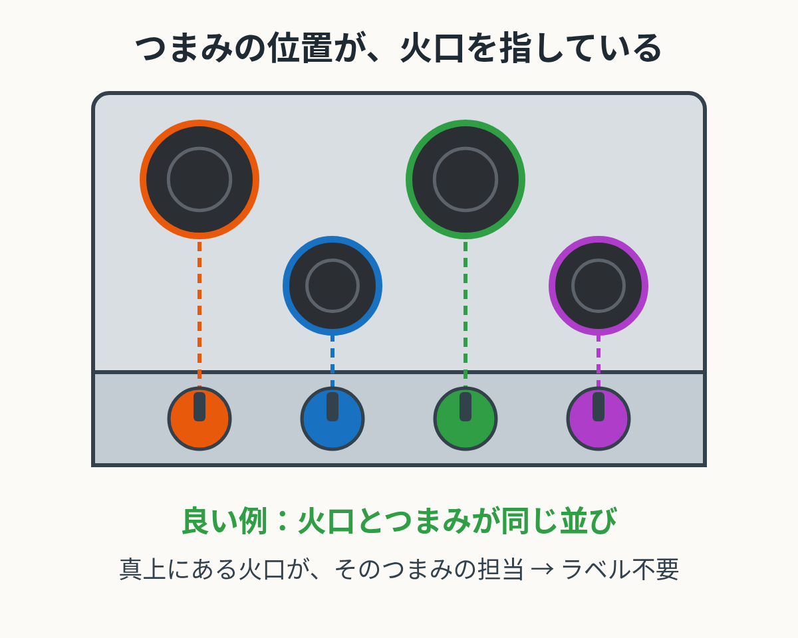
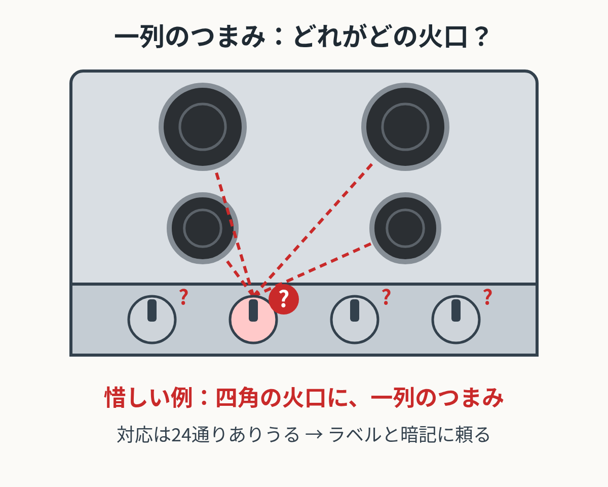

第2回 家電と操作部
コンロのつまみの並び（火口との対応づけ）


何がどう行為を誘っているか
コンロのつまみは、指でつまんでひねれる形をしているので、「回す」ことは見ただけで分かります。これはつまみと手の関係から生まれるアフォーダンスです。
むずかしいのは「どのつまみが、どの火口か」です。火口の並びとつまみの並びをそろえると、つまみの位置そのものが担当の火口を教える手がかり（シグニファイア）になります。ノーマンはこれを自然な対応づけ（マッピング）と呼び、ラベルも暗記もいらない配置として示しました。
惜しい例・悪い例との対比
惜しいのは、四角に並んだ4つの火口の手前に、つまみが横一列に並ぶコンロです。ノーマンは、この並びでは対応の組み合わせが24通りありうるため、ラベルがないと分からないと指摘しています。左右2つずつに分けた配置なら候補は4通りに減りますが、それでも取り違えはよく起こるとも書いています。
1959年のChapanisとLindenbaumの実験でも、つまみと火口の配置が異なる4種類のコンロ模型で反応時間と誤りを比べたところ、配置によって成績に差が出ました。
使いどころのひとこと
スライドの凡例や操作ボタンは、対応する図の要素と同じ並び・同じ位置関係に置くと、説明を読まなくても対応が伝わります。たとえばグラフの凡例を、線の上下の順にそろえるだけでも迷いが減ります。